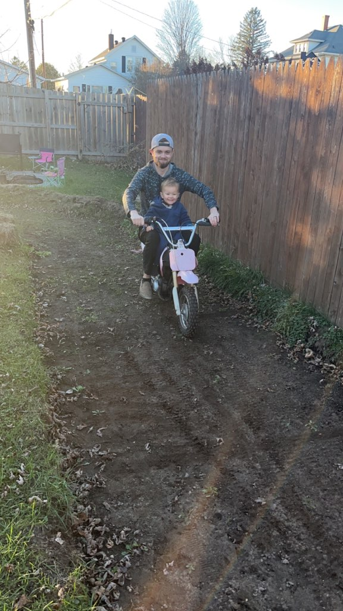
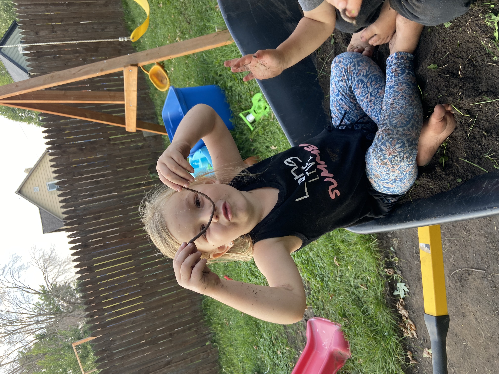
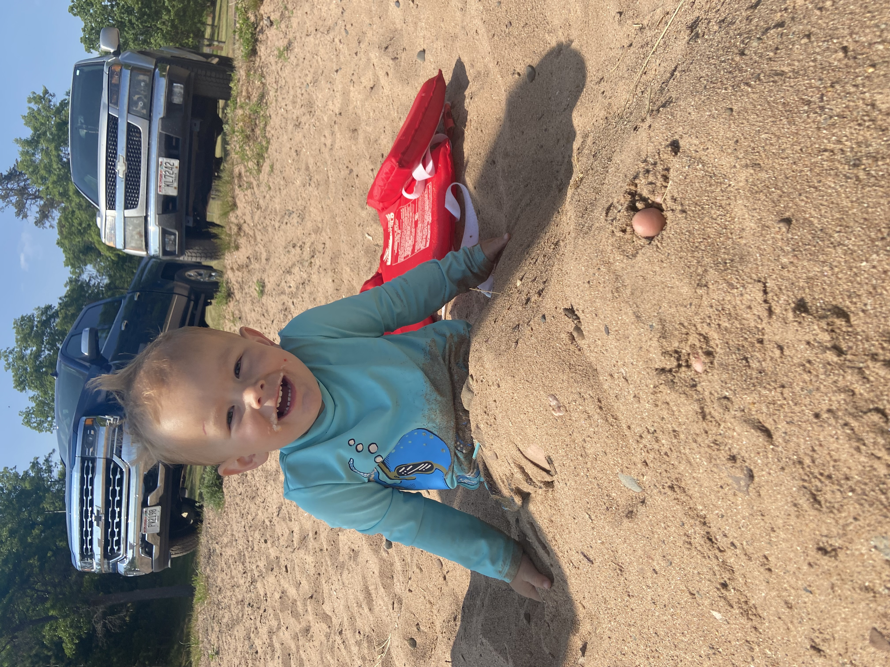
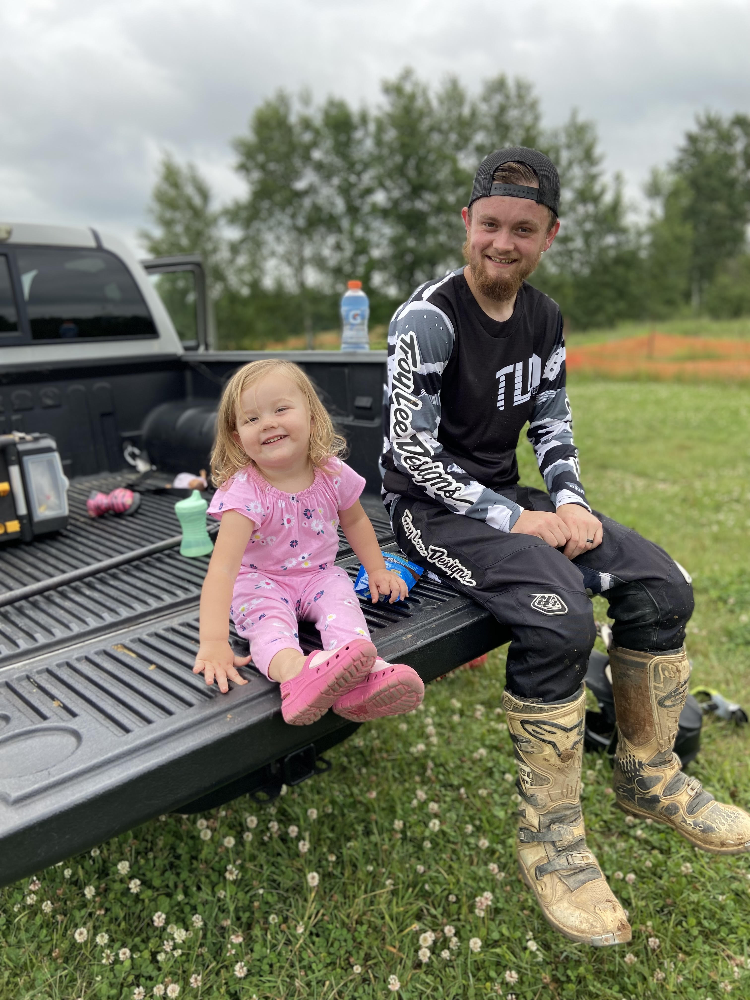
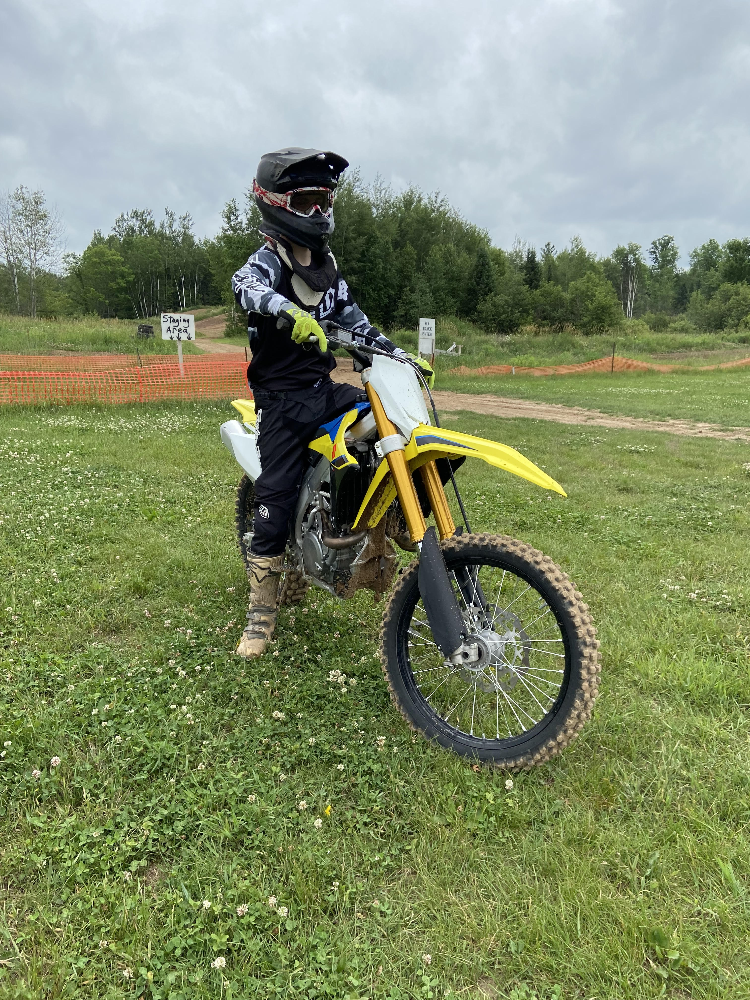
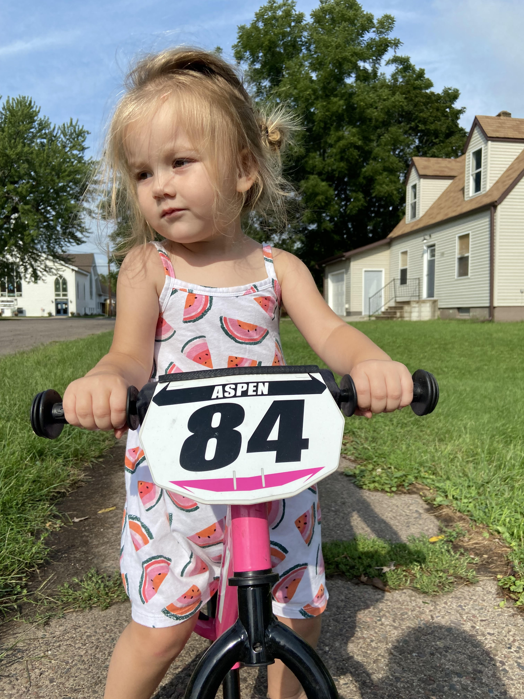

Our Hobbies
We love adventures. From camping and riding dirt bikes to going to the beach to play in the water and sand, we're always looking to have a good time together. I have raced motocross since the age of 5 and still ride to this day. I can't wait for the day when I can go riding and have my kids riding with me. Aspen already is on her way after learning to ride her two-wheeled bike last year, and Oden isn't far behind already. Other things we like to do are go to the playground, go on bike rides, build with legos, and have bonfires and roast marshmallows. As the kids get older, I look forward to making new memories and adding new hobbies to our list of fun things we love to do.





